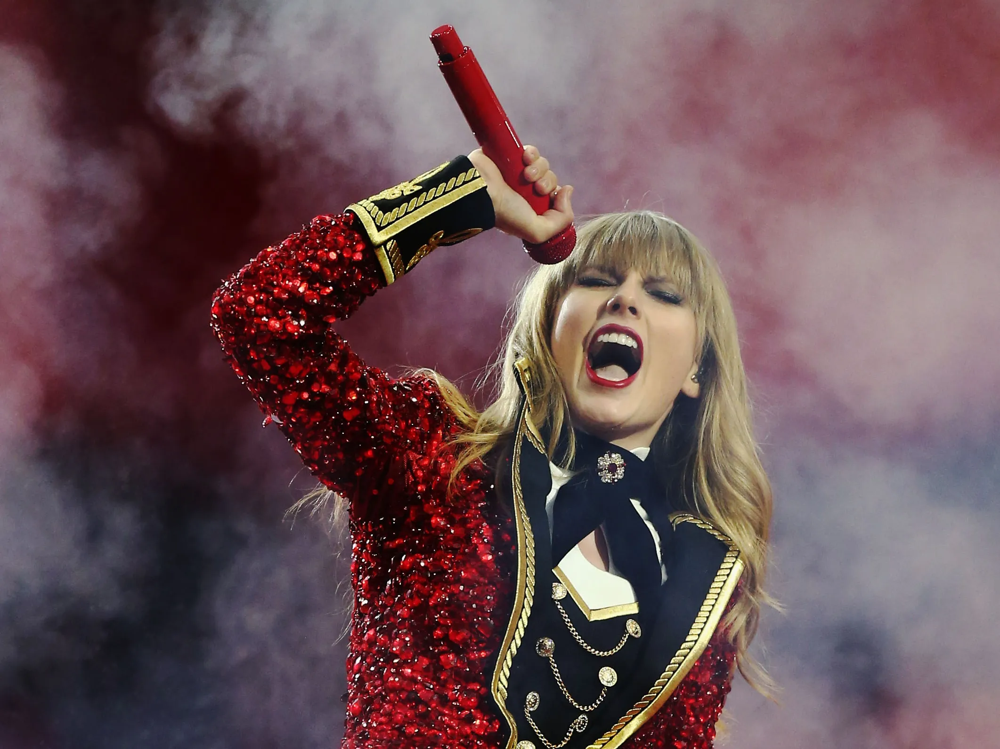

TAYLOR SWIFT
Taylor Alison Swift (West Reading, Pensilvania, 13 de diciembre de 1989), más conocida como Taylor Swift, es una cantante, compositora y actriz estadounidense y una de las artistas con mayores ventas discográficas del mundo, más de 114 millones de álbumes en formato físico, además de cientos de millones de descargas digitales.
Conocida por letras basadas en experiencias personales, se interesó por la música desde niña, participando en karaokes y producciones de teatro musical. Incluso ganó un concurso de talento local cuyo premio fue cantar en el acto de apertura del músico Charlie Daniels.
Con 14 años se mudó a Nashville para iniciar su trayectoria como artista country con la discográfica Big Machine Records, siendo la artista más joven contratada por Sony/ATV Music Publishing House. Con ellos lanzó su álbum debut ‘Taylor Swift' (2006), con el que se convirtió en un referente del country y recibió una nominación a los Grammy como Mejor Nueva Artista. De este disco se extrajeron los singles Tim McGraw (su cantante de country favorito), Teardrops on my guitar y Our song, que rápidamente ascendieron a los primeros puestos de las listas de country.
Dos años después llegaría su segundo disco, 'Fearless', cuyos sencillos ‘Love Story’ y ‘You Belong with Me’ volvieron a arrasar en las listas. El álbum, el más premiado en la historia de la música country, ganó 4 premios Grammy, entre ellos el de Disco del Año (es la cantante más joven en lograrlo), el American Music Awards, Academy of Country Music Awards y el Country Music Association Awards. Además, el tema ‘Change’, fue parte de la banda sonora de EE UU en las olimpíadas de Pekín, y el vídeo de Love Story recibió un MTV como Mejor Vídeo Femenino.
Su tercer disco, 'Speak Now', llegó en 2010 con singles como ‘Mean’, ‘Mine’ o ‘Back to December’, logrando vender millón y medio de copias en su primera semana en Estados Unidos. A continuación, en 2012, lanzó 'Red', su cuarto disco, del que la canción ‘We Are Never Ever Getting Back Together’ llegó a la posición número 1 en la lista Billboard Hot 100 y ‘I Knew You Were Trouble’ alcanzó fama mundial.

A lo largo de su carrera su estilo ha evolucionado hacia el pop, tal y como muestra su quinto álbum, '1989' (con él logró ser la primera y única artista en tener tres álbumes con ventas superiores al millón de copias en una semana). De él forman parte canciones como ‘Shake it off’, con un claro estilo comercial. Es destacable que el vídeo de ‘Bad Blood’ logró el récord de vídeo más visto en un día de toda la historia de YouTube, con más de veinte millones de visitas.
En 2017 lanzó 'Reputation' , considerado como su disco más oscuro, con el que volvió a batir récords en YouTube a través del vídeo de ‘Look What You Made Me Do’, el más visto en YouTube en las primeras 24 horas con más de 43 millones de visitas.
Con ‘Lover' , su séptimo disco, la artista vuelve a sus raíces románticas con canciones como Me!, cuyas letras y vídeo tienen un aire divertido en un entorno de fantasía. En 2020, lanzó dos discos, en los giraba hacia el sonido folk tradicional estadounidense, Folklore y Evermore. También estrenó en Netflix el documental Miss Americana sobre su carrera. En 2022, anunció su décimo álbum de estudio, Midnights, que cuenta con trece canciones.
En 2023, emprendió una gira global, The Eras Tour, que duraría prácticamente dos años y que se prevee como una de las más multitudinarias de la historia de la música.
Es conocida también por su activa participación en la defensa de la educación artística, la alfabetización de los niños, los fondos de ayuda ante desastres naturales, los derechos LGBT e instituciones de beneficencia para niños enfermos.
Entre sus logros más destacados, ha sido reconocida por la Nashville Songwriters Association y el Salón de la Fama de los Compositores, y tiene en su haber la cifra record de 13 Grammy y un Emmy, además de un gran número deBillboard Music Awards, American Music Awards, MTV Video Music Awards y Country Music Association Awards, además de dos nominaciones al Globo de Oro.
En la ceremonia de los Grammy de 2024, donde fue la gran triunfadora, haciéndose con, entre otros galardones, con el premio al Mejor Álbum Pop del año, anunción por sopresa su disco de estudio Nº 11. The Tortured Poets Department.